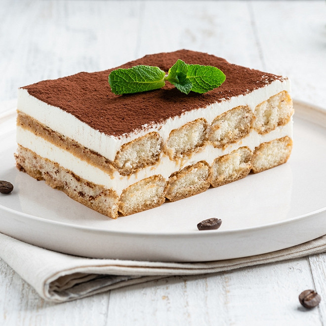

Lemon Tiramisu

Tasty and fluffy homemade lemon tiramisu
Lemon tiramisu is made with lemon curd, lemon syrup, and mascarpone cheese.
Leftovers keep in the refrigerator for 3 days.
Ingredients:
- Lemon juice, sugar and eggs
- Heavy cream, mascarpone & lady fingers
- White sugar and limoncello
- Butter
Steps:
- Make the lemon curd
- Make the ascarpone layer
- Assemble the lemon tiramisu
- Cover & chill before serving